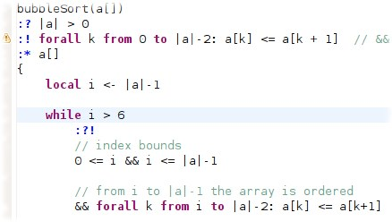
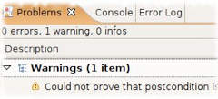
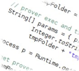
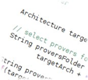

The BudaPest software verification tool

BudaPest is an automated formal software verification tool. It works on top of Pest, a simple while-type imperative programming language, specially designed aiming towards an easy and straight verification of correctness and termination.
Pest programs include a precondition and a postcondition specification for each of the procedures as part of a program syntax. The BudaPest tool aims to verify if the specification given as part of a program is satisfied by the code of the program itself.
Given a Pest program, the BudaPest tool translates it into a proof plan that indicates all the necessary steps (such as assumptions, lemmas, conditions, etc.) that need to be carried out in order to verify it. This proof plan is then fed to a series of automatic theorem provers that try to follow it thoroughly.
If no errors are found then the Pest program terminates and is correct with respect to its specification. Otherwise, the programmer is presented all the possible places where the specification might not hold, in order for him to fix it and give it another try.

Welcome to the budapest tool webpage
The BudaPest tool was entirely conceived and programmed in the Department of Computer Science in the FCEN, Universidad de Buenos Aires.
Its development is supported by an IBM grant.



NEWS
2012-05-07. We released an online Budapest tool. No installation, no requirements, all the fun... Try it out here!